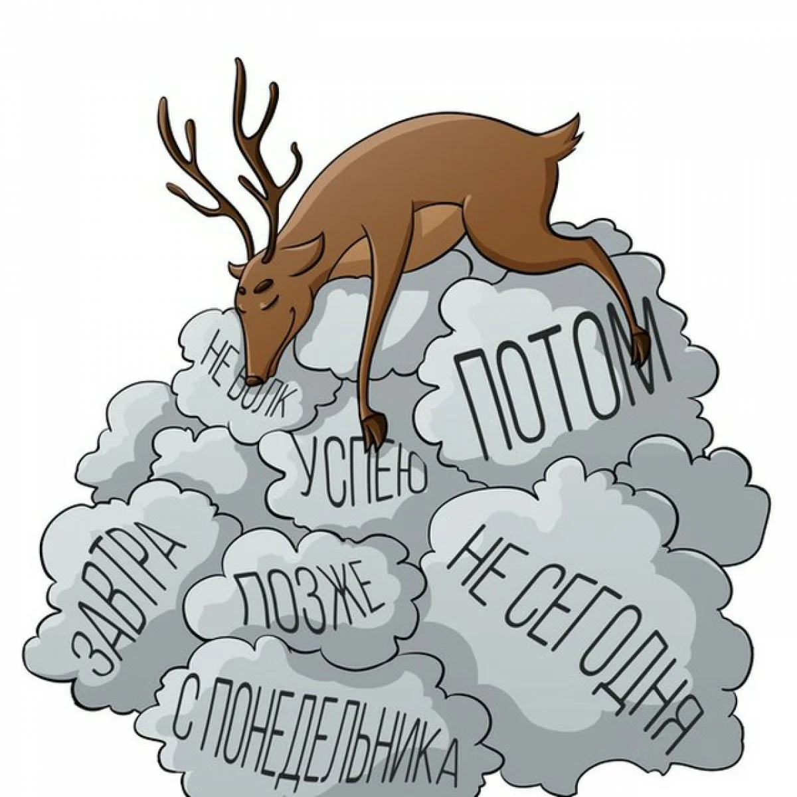

Как побороть лень?
Пожалуй, это самый насущный вопрос, который задает себе современный человек. И по всей видимости если вы задали себе такой вопрос, то для вас он является чрезвычайно важным.
Лень это по настоящему проблема, а поскольку она существует ее необходимо безотлагательно решать и принимать меры, так как к этому состоянию зачастую добавляется и состояние чрезмерной апатии, недовольства жизнью и уныния. Все эти состояния являются крайне негативными и от них нужно избавляться как можно быстрее.
В период лени в человеке граничат два состояния, первое состояние это тогда когда вы сами понимаете что вам нужно подыматься, перестать ленится, и начинать действовать. Второе состояние абсолютно противоположное первому. В этом состоянии вас пугает и отталкивает сама мысль о том, что вам нужно работать, при одной мысли что вам «нужно», «надо», «необходимо» у вас происходит внутреннее отторжение. Происходит это потому что, ваше подсознание интерпретирует эти слова по своему, для подсознания «надо» - означает, что надо не для себя, а для кого то другого. Вот поэтому в первую очередь вы должны ставить себе задачу не потому что «надо», а потому что «хочу», здесь кроется очень важная деталь.
Итак «Как побороть лень?». Первое что необходимо сделать - это поставить жизненные цели. Так как без них нет мотивации работать и достигать определенных вершин. Дробите цель на более мелкие части, пишите себе задания на каждый день на обычном листе бумаги, это поможет вам сконцентрироваться на более определённых задачах, и помните о том, что вы должны «хотеть» выполнить эти задачи.
Важным толчком к повседневной деятельности выступает физическая нагрузка, особенно в тех случаях, если вы являетесь работником интеллектуального труда. Делайте каждое утро зарядку и принимайте контрастный душ, это поможет вам не только взбодрится, но и зарядится энергией на весь день. После физических упражнений организм пребывает в тонусе, в результате вам будет намного легче приступить к задуманной деятельности.
Можете даже выпить чашечку кофе и включить какую-то приятную вам музыку, это непременно пойдет на пользу и даст еще один толчок для вашего хорошего настроения.
Важным фактором продуктивной деятельности является и рабочая обстановка. Приведите в порядок свое рабочее место, все вещи должны лежать на своих местах. От окружающей обстановки зависит ваше настроение, а в итоге и ваша продуктивность.
Зачастую нам приходится выполнять монотонные задания, которые очень сильно утомляют и убивают всякое желание работать. В таких случаях мы рекомендуем делать небольшие перерывы с выполнением этого задания и переключатся на выполнение другой задачи, это привнесет разнообразие в вашу рутинную работу и не даст заскучать.
Так же от любой работы не забывайте отдыхать, делайте перерывы 10 – 20 минут между выполнением того или иного задания. Во время этого перерыва пройдитесь по улице, можно так же сделать несколько физических упражнений, поприседайте или сделайте 10 отжиманий.
Есть так же один интересный способ заставить себя работать, это перестать вообще, что-либо делать. Вот так вот просто лягте на диван и смотрите тупо в потолок, через время вы сами заметите, что в вас зародится непреодолимое желание, что то делать, такова человеческая природа. А если быть уж совсем откровенным, то лени на самом деле не существует, все мы с вами что то постоянно делаем, вопрос заключается в другом «на сколько эффективны наши действия?».
И конечно же хвалите себя за результаты. Зачем? Потому что вы получите моральное удовольствие от проделанной работы, и в результате вы снова захотите получить позитивные эмоции, это будет служить вам дополнительной мотивацией в преодолении вашей лени.
Вот такие простые рекомендации можем вам посоветовать. Надеюсь, ответ на вопрос «Как побороть лень?» Вы для себя нашли. Действуйте, у Вас все получится.